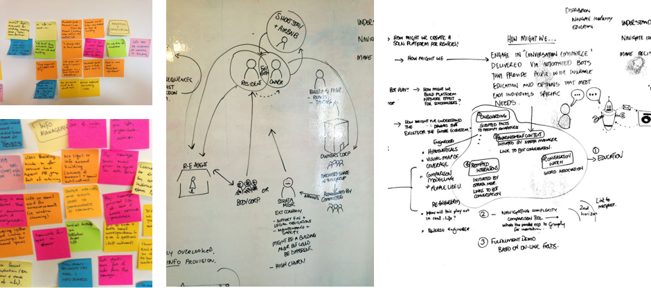
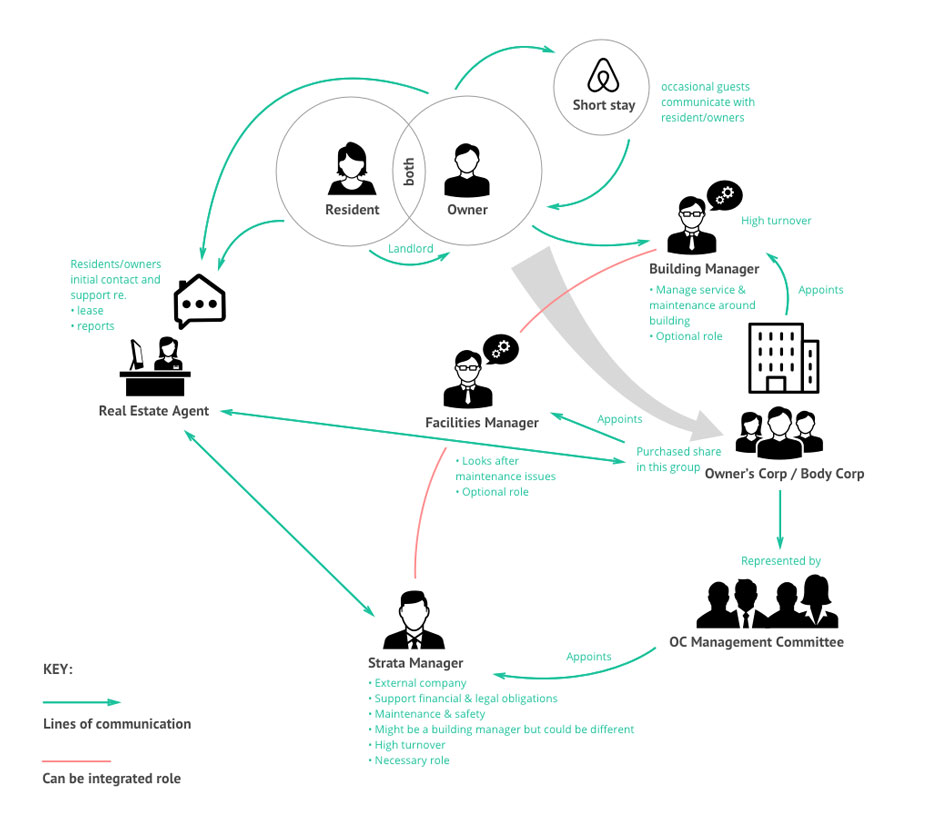
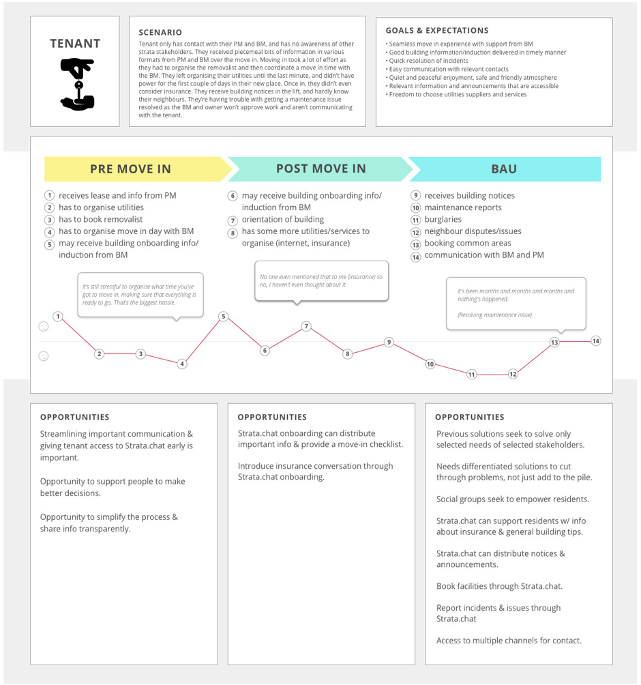
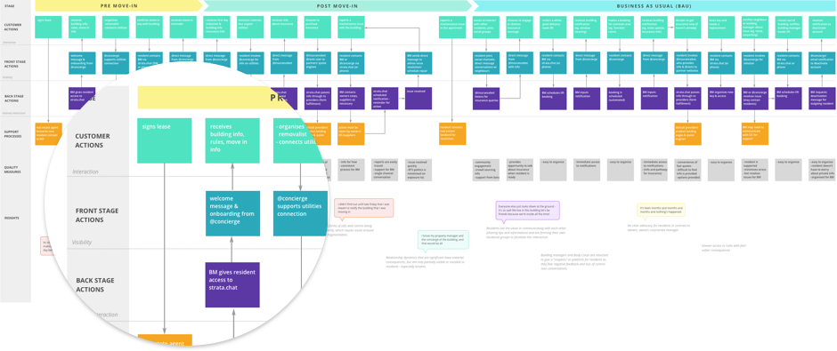
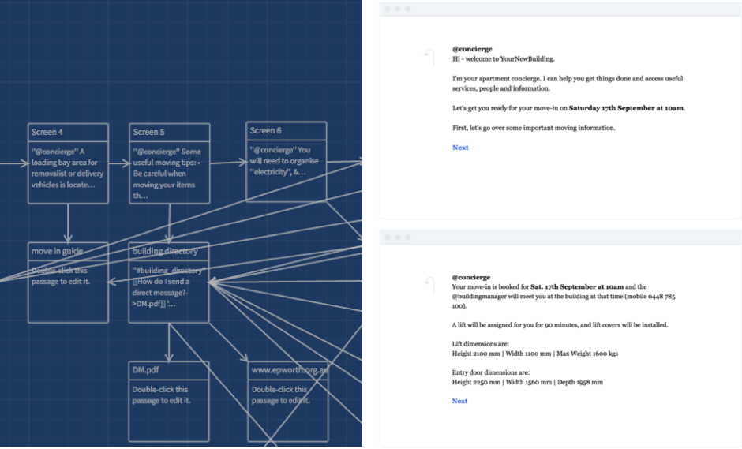
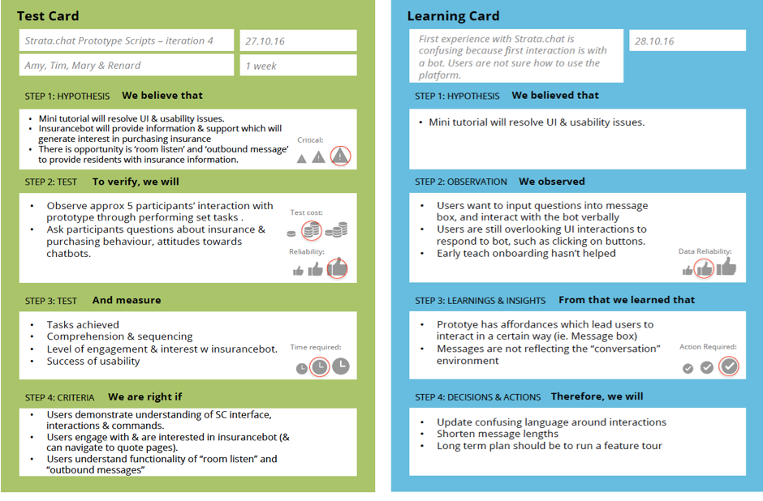

Strata.chat
AN APARTMENT COMPLEX CHATBOT PROJECT
In 2016 I participated in a collaborative research project between 4th Party, and a tier one Australian insurance company. This “insurance-bot” research uncovered learnings and insights into behaviours and attitudes of strata residents, their goals and pain points around engaging with virtual agents. The research leveraged Strata.chat, a messaging and service delivery automation platform designed for strata building communities.
UNDERSTANDING USERS
This project started with an extensive research plan, outlining the research goals, key dates, participant profiles and recruitment strategy, as well as the scope of the entire project, and of course, the user interview script.
We conducted a discovery workshop to synthesise learnings from interviews with strata residents and managers where we gained an understanding of the broader experiences and goals of different groups.
Discovery workshop to process all that information!
TELLING A STORY
A number of artefacts were produced to guide and document the ideation process, and communicate value to investors. When the project was completed, this documentation was compiled into a visual presentation deck, for both parties to use.
The strata environment
Customer journey map
Mapping out a customer journey was useful to visualise the user’s goals and pain-points through their current experience. From this we could easily identify opportunities to reduce friction and help them achieve their goals.
A HOLISTIC EXPERIENCE
Service blueprint
While we were investigating how to use an insurance-bot in an online instance, we found it necessary to look at the entire customer interaction with the move-in experience. A service blueprint was produced to get a macro view on customer engagement within strata.chat across multiple touch-points, identifying service delivery opportunities.
RAPID PROTOTYPING
The project took place over 16 weeks, so it was necessary to work in fast, weekly iterative cycles. Adopting a lean-UX approach, we utilised a number of tools to help us “build, test, learn”. Twinery, an online open-source storytelling tool was perfect to model early automated conversation scripts. These scripts were then inserted into the strata.chat testing instance, where they could be further tested with users and refined.
Using Strategyzer card templates (Value Proposition Design), we were able to synthesise high volumes of feedback quickly, and share the insights between teams.
The final output was an interactive prototype instance of the product for stakeholders and partners, demonstrating the automated conversations.
Build.
Test. Learn.